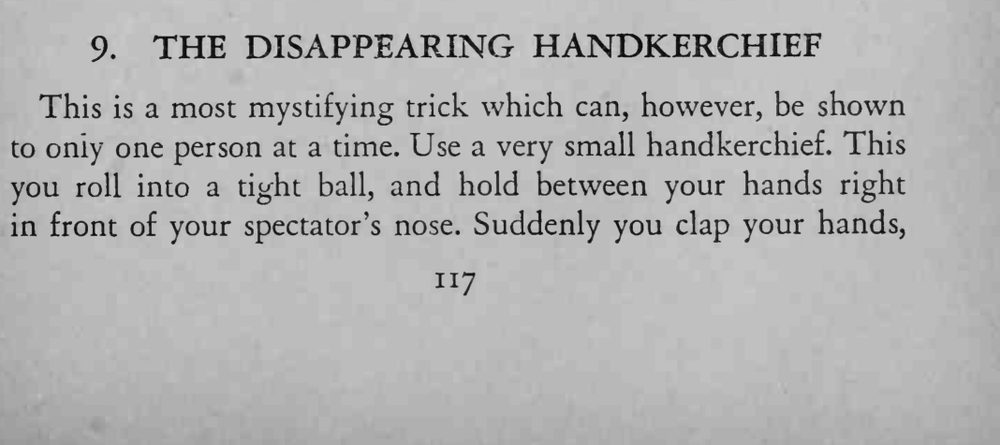
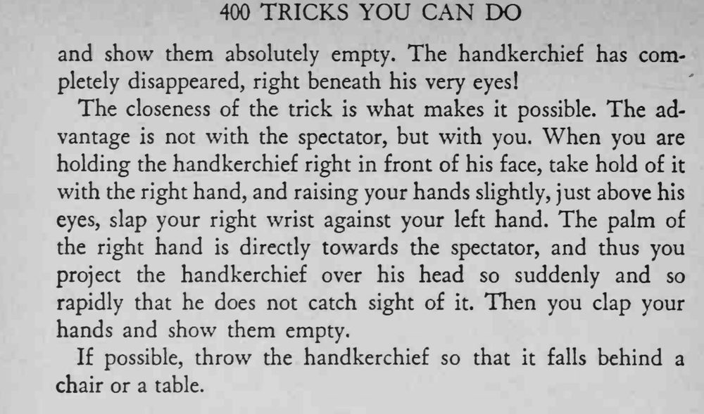

魔术师在观众鼻子底下把一小块手帕揉成团，双手一拍再摊开，手帕已消失得无影无踪。
必须一次只给一个观众表演，距离越近越容易成功。


This is a most mystifying trick which can, however, be shown to only one person at a time. Use a very small handkerchief. This you roll into a tight ball, and hold between your hands right in front of your spectator's nose. Suddenly you clap your hands, and show them absolutely empty. The handkerchief has completely disappeared, right beneath his very eyes! The closeness of the trick is what makes it possible. The advantage is not with the spectator, but with you. When you are holding the handkerchief right in front of his face, take hold of it with the right hand, and raising your hands slighdy, just above his eyes, slap your right wrist against your left hand. The palm of the right hand is directly towards the spectator, and thus you project the handkerchief over his head so suddenly and so rapidly that he does not catch sight of it. Then you clap your hands and show them empty. If possible, throw the handkerchief so that it falls behind a chair or a table.